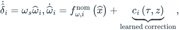
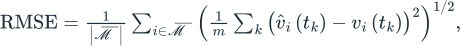

整体概括
由稀疏量测回推未装表机组
目标是故障清除后的动态状态估计：输入为若干机组的断续相量测量单元（PMU）窗口，输出为各机组的相对转子角和转速偏差轨迹。算子读完整窗再前向计算一次，因此窗内早段是平滑回估，只有窗末估计可用已到达样本实时计算；这不是在故障前预测故障。
对照原文证据
From a sparse, intermittent measurement window at a few generator buses, the operator estimates the rotor-angle and speed trajectories of all machines, unmeasured ones included, in one forward pass.The operator reads the whole window, so \hat{x}(t) for t<T is a smoothed estimate and only \hat{x}(T) a real-time one; the filters use past samples only, which favors the window-based estimators.分清速度收益和误差收益
研究对照了经典摆动模型和仅输入端电压相量的详细机组模型。离线训练减少了逐窗求解，但更准并非自动结果：小系统参数准确时逐窗硬拟合更有利；欠观测的大系统中，算子学到的训练情景先验反而可能更重要。全部结果是模拟，不是电网运行实测。
对照原文证据
The results hold for a detailed machine model with exact parameters seen only through voltage phasors.With a perfect model, hard-constrained fitting is almost exact, and the two operators, which only approximate this fit, are less accurate.Where one window determines the state, amortization saves cost but not error; where it cannot, the operator beat a per-window fit, which we attribute to its learned prior.Validation uses simulation only. Next steps are inverter-based resources [ 34 , 17 ] , hardware-in-the-loop or field PMU data, and governor and stabilizer dynamics.Research gap
不想逐窗优化，也没有现场状态标签
作者把问题放在两类方法的交界：移动窗估计（MHE）逐窗调整模型轨迹，代价和准确度依赖可观测性与模型；有监督的直接解码器虽快，却通常需要现场不可得的内部状态标签。本文用离线合成传感器读数训练，不能把不用状态标签读成训练不需量测或模型。
对照原文证据
Moving-horizon estimation (MHE) instead fits a model trajectory to all measurements in a window by nonlinear least squares [ 11 ] . It can recover the internal states of generators that have no PMU [ 12 ] . However, most of these methods need an accurate model and enough measurements to determine the state. With uncertain parameters or few sensors, their accuracy drops. In addition, MHE must solve a new optimization for every estimate.However, purely data-driven estimators are trained on state labels, which field data do not provide, and ignore the physical laws that the state must obey.It is trained on simulated measurements, without state labels. With several phasor measurement units, masked training hides one from the input but keeps it in the loss.区分正向代算与逆向估计
作者列举的神经算子正向模拟器从已知输入推演轨迹；这里需要从部分观测找出一条可能的内部轨迹。表 I 只列若干代表性方法的条件，不能当全领域查新。根本限制是同一观测可能对应多条状态轨迹，网络权重会偏向训练情景中常见的那条。
对照原文证据
First, neural operators have served as fast simulators of power-system dynamics in place of an ordinary differential equation (ODE) solver, for post-fault trajectories [ 31 ] and for machine models [ 32 , 33 ] ; however, they map known inputs to trajectories, whereas DSE maps measurements to states.TABLE I: Positioning against representative prior work (✓: yes; \circ : partly, see text; –: no).The map is not an exact inverse: with noise and partial observation, many trajectories fit a given \mathcal{Z} . Trained to minimize the expected measurement residual over the training scenarios (Section III ), the operator favors, among them, those typical of the training scenarios; in effect, it learns a prior (Section IX ).算法主线

原图由 arXiv 加载；若未显示，可打开下方原图链接。
跟着原图读
- 先看哪里
左边选硬 MHE 与 GNO-soft 差距的中位窗，右边专挑 GNO-soft 最差窗。每边从上往下读：度、千分之一标幺转速、角误差（度），横轴是故障清除后窗内秒数。
- 能说明什么
顺蓝实线 GNO-soft 和橙虚线硬 MHE 看相位与误差，在所选右窗蓝线的整窗角 RMSE 仍低于橙线，但紫色 ERTS 更低。灰色水平静态基线和围绕真实轨迹的灰带不是同一对象。
误差轴截于 ±10°，图例数字是该窗 RMSE；左边不是某方法自身中位窗，不能代替表 II 的跨情景均值。
把样本、缺测和电气邻接放进同一入口
先把每台机的窗口分箱，经典角度实验同时输入箱均值与占用掩码，再附参考机标志和归一化机组参数。GATv2 在 Kron 化简后的机组图上使用导纳边特征和残差连接，输出每台机的编码。即使某机没有测点，也能通过图邻居接收信息；这与训练时摆动积分把残差梯度传回未测机是两条路径。
对照原文证据
with b_{i},\mu_{i}\in\mathbb{R}^{N_{b}} collecting them over the bins. This gives 2N_{b} channels per node, in radians for angles and in p.u. for phasor components, centered on the pre-fault equilibrium. Three static features are appended, giving \mathbf{a}_{i}=\big[\,b_{i},\ \mu_{i},\ \mathbf{1}\{i=\text{ref}\},\ H_{i}/\max_{j}H_{j},\ X^{\prime}_{d,i}/\max_{j}X^{\prime}_{d,j}\,\big]\in\mathbb{R}^{2N_{b}+3} . For a voltage phasor, the real and imaginary bin means take the place of b_{i} and \mu_{i} . A linear layerwhere \mathbf{h}^{(l)} are the node features after layer l and \phi is the sigmoid linear unit (SiLU) activation. The edge features are e_{ij}=(\log|Y_{ij}|,G_{ij},B_{ij}) . The first is standardized, and the others are scaled by their largest magnitude. The stack outputs the code z , and the attention allows each machine to weight its neighbors differently.The unroll couples the machines. In the 9-bus example, the predicted angle of measured machine 2 responds to the initial state of unmeasured machine 3 (Fig. 3 (c)). Fitting the measured machines therefore also shapes the unmeasured ones, without labels for their states.共享初态头，比较硬积分和软修正
初态由机组编码经受尺度约束的头给出，相对故障前平衡点表示；参考机固定。硬版按标称动力学做固定步长积分；软版只在转速微分方程加随时间和机组编码变化的修正，每个积分步内保持不变。训练回传穿过积分，部署时保留积分但不再以每窗残差重新拟合初态。原文内联图可从证据锚点打开。
对照原文证据
Fig. 2: The GNO of Section III (settings of Section V , window of Fig. 5 (a)): a GATv2 branch encodes the PMU window; the physics decoder integrates the swing equations. Dashed: GNO-soft only; dotted: training gradient.where \boldsymbol{\delta}^{\text{eq}} is the pre-fault equilibrium and s_{\delta},s_{\omega} are fixed scales. The reference machine is fixed at its known state. This bounded form keeps training stable.computed by fixed-step fourth-order Runge–Kutta (RK4) steps inside the network; we call this the unroll. Training gradients flow back through it to \hat{x}(0) (Fig. 2 ). The output is thus a trajectory of the nominal model, up to integration error.When the nominal model is imperfect ( f_{\text{nom}}\neq f ), a trajectory forced to satisfy ( 10 ) cannot match the true dynamics. GNO-soft therefore adds a learned correction c_{i}(\tau;z) to the speed equation of each machine. The correction is a continuous function of the normalized time \tau=t/T :遮住的是输入，不是训练监督
硬版用测量算子把估计轨迹投影回有数据的机组与时刻，软版再惩罚修正幅度。多 PMU 训练窗随机选一部分，隐藏一个有测点机组的分箱与掩码，但在损失中保留它的读数。这样被隐藏处仍有传感器监督；部署输入就是实际可得窗口，不需要提供被遮蔽目标或真值轨迹。
对照原文证据
The operator is trained without true state trajectories. Instead, the loss compares the predicted trajectory only with the sparse measurements. Over the window’s samples ( 5 ), GNO-hard minimizesIn addition, GNO-soft adds a penalty on the learned correction. The data term is scaled by the noise level \sigma so that the two terms are comparable:To constrain them, when windows carry several PMUs, we hide one measured machine from the branch in a random half of the training windows. Its bins and mask are zeroed, as for an unmeasured machine, but its samples stay in ( 13 ). The operator thus learns, from measurements alone, to predict machines it does not see.关键公式
从输入编码读到硬、软耦合
先用分箱式区分空箱和观测值接近零的非空箱，再看为何硬版全窗只能从初态改变轨迹。软版仍保持转角和转速的运动学关系，但转速导数不必精确服从标称模型。不能把学到的自由加速度项直接解释成惯量或阻尼的物理识别。
对照原文证据
The window ( 5 ) is split into N_{b} uniform time bins per node (strip in Fig. 3 (b)). Let \mathcal{Z}_{ik} be the samples of node i that fall in bin k=\lfloor N_{b}t_{\ell}/T\rfloor , and let n_{ik}=|\mathcal{Z}_{ik}| . ThenThe output is thus a trajectory of the nominal model, up to integration error. With the reference machine fixed, the trajectory’s only free quantities are the 2(N_{g}-1) initial conditions, or 6(N_{g}-1) for the detailed model of Section VIII . GNO-hard thus learns, as a function of the window, the fit that hard-MHE solves anew for every scenario (Fig. 4 ).When the nominal model is imperfect ( f_{\text{nom}}\neq f ), a trajectory forced to satisfy ( 10 ) cannot match the true dynamics. GNO-soft therefore adds a learned correction c_{i}(\tau;z) to the speed equation of each machine. The correction is a continuous function of the normalized time \tau=t/T :训练残差与状态评估不能互代
损失基于可测量量，软版用噪声方差缩放观测误差和修正的相对权重。结果表则用模拟真值计算未测机组状态误差，先逐机对时间开方再做机组均值；因此观测残差很小既不保证状态误差很小，也不等于把所有机组与时点拼成一个 RMSE。
对照原文证据
The operator is trained without true state trajectories. Instead, the loss compares the predicted trajectory only with the sparse measurements. Over the window’s samples ( 5 ), GNO-hard minimizesIn addition, GNO-soft adds a penalty on the learned correction. The data term is scaled by the noise level \sigma so that the two terms are comparable:This mean of per-machine RMSEs differs from a pooled one when the error is spread unevenly across machines. Angles are in degrees and speeds in 10^{-3} p.u. Angles stay within \pm 82^{\circ} , so PMU angles never wrap. All estimators see the same N test scenarios of each study, and results are averaged over them, with the standard error of the mean (SEM) as their uncertainty.编码间歇读数：空箱不等于零读数
逐节点、逐时间箱算观测均值与占用标志。教学例：两笔读数 0.1、−0.1 rad 的均值为 0 rad，标志为 1；空箱也编码为 0 rad，但标志为 0。
符号与实现提醒
- bᵢₖ、μᵢₖ
- 箱均值与无量纲占用标志。
- nᵢₖ、𝒵ᵢₖ
- 箱内样本个数与集合。
- yₗ
- 经典设定以 rad 表示角度；相量分量用 p.u.。
标志防止混淆零量测与无量测；详细相量设定以复相量实部、虚部箱均值替换这两个通道，见原文 III-A。
硬耦合：只从估计的初态出发
名义模型把故障清除后的初始状态推进。教学例：若某分量局部导数恒为 0.02 p.u./s，经过 0.1 s 会从 0.010 增到 0.012 p.u.，实际积分的导数随全网状态变化。
符号与实现提醒
- x̂(0)、x̂(t)
- 初态与时刻 t 的联合状态，含相对转角和相对转速偏差。
- f_nom
- 标称模型的联合状态导数。
- s、t
- 积分与读出时刻，以秒计。
实际用固定步长 RK4，符合标称方程只到数值积分精度，不能保证模型参数为真；参考机不随其余机组一起估计。
软耦合：修正加速度，不改角度运动学

软版修正加在相对转速的变化率上。教学例：标称变化率 −0.03 p.u./s，加 0.01 p.u./s 的修正后为 −0.02 p.u./s，仍按转速计算转角导数。
符号与实现提醒
- ωₛ、ω̂ᵢ
- 同步角速度与机组标幺转速偏差。
- f_nom、cᵢ
- 标称转速变化率与同量纲的学习修正。
- τ、z
- 无量纲归一化时间与逐机组编码。
每一积分步内修正取常值，参考机修正为零；修正自由度并不构成对模型失配来源的识别。
软损失：惩罚过大的自由修正
在观测投影的均方残差之外，对修正的平方做平均惩罚。教学例：当测量均方残差与噪声方差相同，第一项为 1；若加权修正项为 0.2，合计为 1.2。
符号与实现提醒
- ℒhard、σ
- 观测均方残差与同观测单位的噪声标准差。
- w_c
- 平衡修正幅值惩罚的权重。
- ⟨·⟩
- 对机组和时间网格平均。
噪声标准差作为缩放须非零。权重变大把软版推向硬版，不宜把标称模型差很大时的好拟合作为识别真实参数的证据。
比较站外误差：逐机开方再平均

先对同一机组的时间点求 RMSE，再等权平均未测机组。教学例：若两台机各自窗口 RMSE 为 1° 和 3°，此处报告 2°，而不是把两台的全部误差先合并再开方。
符号与实现提醒
- M̄
- 测试窗口未测机组集合。
- vᵢ、v̂ᵢ
- 某机组真值和估计，选角度或转速分别核算。
- m、tₖ
- 窗口积分网格的点数及第 k 个时刻。
再对测试情景汇总均值和 SEM；不是以装表机残差为指标，也不是窗末单点误差。
实验怎么做
仿真协议：先切故障，再打开窗口
经典 WSCC 9 母线、3 机组实验从故障清除起取 3 s 窗，RK4 每 10 ms 采状态；惟一装表机以 20 ms 采相对转子角，样本保留概率 0.85、角噪声标准差 0.01 rad。参数逐机扰动，但估计器都用标称参数；详细模型才把理想转子角换成真正意义上的端电压相量。
对照原文证据
Experiments use the WSCC 9-bus, 3-machine system [ 40 ] , reduced to its three internal machine nodes.The 3 s window opens at clearing. Trajectories are integrated with RK4 and sampled every 10 ms. Machine 2 is the only measured machine: y_{\ell}=\delta_{2}(t_{\ell})+\nu_{\ell} at every other step (every 20 ms). Each sample is kept with probability 0.85 , and \nu_{\ell}\sim\mathcal{N}(0,\sigma^{2}) with \sigma=0.01 rad ( 0.57^{\circ} ).Model error is injected by perturbing (H,D,E,X^{\prime}_{d}) of every machine within \pm\varepsilon of nominal. All estimators use the nominal model.In all studies except the detailed-model one, it is the rotor angle, h_{i}(x)=\delta_{i} , which is an idealization; the detailed-model study (Section VIII-A ) uses the complex terminal voltage phasor that a substation PMU actually observes.训练范围、跨系统和复现入口
经典设置用 3,000 条训练情景，参数扰动在标称值的 ±8% 内；更大的测试扰动超出该幅度。Kundur 与 IEEE 39 母线是在新系统重训同一架构，并非权重零样本迁移。单线程 CPU 逐窗计时与 GPU 离线训练分开；文末链接指向代码、检查点和逐情景结果，本次没有运行。
对照原文证据
It runs for 18{,}000 (hard) and 21{,}000 (soft) steps with batch size 16 , a pool of 3{,}000 scenarios, and w_{c}{=}10^{4} . Training scenarios perturb the parameters within \pm 8\% of nominal, so test points above \varepsilon=8\% lie outside the training range.Having analyzed the 9-bus system in detail, we retrain the same architecture, with the same hyperparameters, on two more systems. This tests the reuse of the architecture after retraining, rather than the transfer of one trained model to an unseen system. The Kundur system [ 41 ] , the standard benchmark for the 0.5 – 0.7 Hz inter-area mode, has four machines in two areas joined by a weak tie, and one PMU. The IEEE 39-bus system [ 42 ] has 10 machines and three PMUs.On one CPU thread, the operator costs at most twice as much per window as the EKF and ERTS; for 200 windows of the 9-bus system processed at once, its forward pass takes 1.6 ms per window. Training is done once per system: one operator took 42 to 88 min on a Tesla T4 GPU for the 9-bus, 39-bus and 118-bus systems, and 3 to 10 h on a cluster GPU for the Kundur and detailed models; on the 118-bus system, this equals hard-MHE’s CPU time on about 60 windows.The code, checkpoints and per-scenario results are available at https://github.com/HuyHoangLe0201/gno-dse .比较同一批窗口，不把 SEM 当区间覆盖
基线包括固定平衡点、EKF/UKF、用全窗的 ERTS 平滑器、两类 MHE 和有状态标签的 SHRED；另有有监督解码器对照。每项研究评同一批测试情景，结果报均值和 SEM；配对 Wilcoxon 以 p<0.05 判差异，主表原始 p 值未校正。GNO 条目平均五个种子，其他方法一次运行；滤波器有在测试情景挑有利参数的设置。
对照原文证据
To answer this question, we compare against a static baseline, the EKF, the UKF, the EKF’s Rauch–Tung–Striebel smoother (ERTS), two MHE variants and the supervised SHRED [ 16 ] , on the Western Systems Coordinating Council (WSCC) 9-bus, Kundur two-area, IEEE 39-bus and IEEE 118-bus systems.All estimators see the same N test scenarios of each study, and results are averaged over them, with the standard error of the mean (SEM) as their uncertainty. Two estimators differ significantly when a paired Wilcoxon signed-rank test over the scenarios gives p<0.05 ; otherwise they are statistically tied. Tables II , III and IV report the RMSE ( 17 ) in degrees, whose SEMThe p -values are uncorrected (Bonferroni over 328 : 1.5\times 10^{-4} ). A GNO entry averages five seeds, others one run; their pooled results stay within 3\% (9-bus), 5\% (Kundur, 39-bus) and 13\% (detailed, 118-bus)Each filter’s Q , and the UKF’s sigma-point spread \alpha ( \beta{=}2 , \kappa{=}0 ), take the values most favorable to it on the test scenarios, from a grid that brackets them or is flat beyond them, so our margins are conservative. ERTS adds a Rauch–Tung–Striebel backward pass to the EKF, tuned the same way; like the operator, it uses the whole window.提升与证据
小系统：自由修正有效，但有上限
WSCC 9 母线表 II 每档 N=50；7% 模型失配时，未装表机角 RMSE 均值 GNO-soft 为 0.68°，ERTS 为 0.81°，硬 MHE 为 1.50°。参数准确时硬 MHE 是最低的 0.20°；失配到 20% 时 ERTS 为 1.72°、GNO-soft 为 2.23°。这里软修正优于只摊销硬求解，不等于软版在强失配下最稳。
对照原文证据
TABLE II: WSCC 9-bus: angle RMSE (deg) at the unmeasured machine versus model error ( N{=}50 ; static: 6.3 to 7.5 ), and inference time.Method RMSE of \delta (deg) vs. model error \varepsilon Inference 0\% 5\% 7\% 10\% 15\% 20\% time (ms) EKF 2.93 3.05 3.23 3.11 3.61 3.74 99 UKF 2.87 3.02 3.14 3.06 3.57 3.74 167 ERTS 0.39 0.64 0.81 0.95 1.37 ∗ 1.72 ∗ 97 GNO-hard (ours) 0.39 1.27 1.54 2.33 3.46 4.12 110 GNO-soft (ours) 0.39 0.59 0.68 ∗ 0.94 1.64 2.23 123 Hard-MHE 0.20 ∗ 1.24 1.50 2.28 3.47 4.16 1214 Soft-MHE 0.33 0.90 1.12 1.31 1.88 2.12 9117Up to a model error of 10\% , GNO-soft and the smoother are the two most accurate estimators and are statistically tied, except at 7\% , where GNO-soft is better. At larger errors, further beyond the training range, the smoother is better. GNO-hard, by contrast, is on par with hard-MHE at every nonzero model error. On this system, therefore, the gain over hard-MHE comes from the soft coupling rather than from amortization.详细机组和大系统不是同一个实验
表 IV 的详细 9 母线电压相量设置以准确参数做 N=60 个情景，软版角 RMSE 均值 0.51°，与 ERTS 统计无显著差异。经典 118 母线的 54 台机中仅 8 台测角，N=50；软版、硬 MHE 分别为 0.70°、2.28°，单 CPU 逐窗分别 188、84286 ms。大系统的失配结果不能并到详细相量设置。
对照原文证据
TABLE IV: Angle RMSE (deg) at the unmeasured machines and inference time: detailed 9-bus model ( N{=}60 , exact parameters, static 8.77 ), IEEE 118-bus system ( N{=}50 , static 4.44 ). Asterisks concern the mean.System Method mean median 90th pct. ms Detailed 9-bus flux-decay + AVR 1 voltage PMU EKF 2.54 2.16 3.74 1638 UKF 2.11 1.92 3.03 2752 ERTS 0.56 0.52 0.84 1386 Hard-MHE 0.60 0.54 0.98 2339 GNO-hard 0.52 0.43 0.97 540 GNO-soft 0.51 0.40 0.93 667 IEEE 118-bus 54 machines 8 PMUs EKF 1.17 1.15 1.67 264 UKF 1.17 1.15 1.67 490 ERTS 0.86 0.86 1.32 288 Hard-MHE 2.28 2.20 3.13 84286 GNO-hard 0.77 0.71 1.14 143 GNO-soft 0.70 ∗ 0.66 1.03 188On the detailed model (Table IV , Fig. 9 (a)), both operators are more accurate than a UKF driven by the same samples on nearly every scenario. Since the UKF uses past samples only (Section V ), the fair comparison is with the window-based hard-MHE and smoother. GNO-soft is significantly more accurate than hard-MHE and tied with the smoother, and GNO-hard is tied with hard-MHE, both at lower cost. With exact parameters, the two couplings are tied, as on the classical 9-bus model.Every estimator uses the nominal model, while the scenarios carry 8\% parameter error on inertia, damping, and internal EMF.拆出图、先验和监督标签各自的作用
删掉消息传递后，39 和 118 母线误差超过原来的两倍；纯轨迹解码器在 9 母线对照失败。给硬 MHE 加用训练真状态拟合的高斯先验可收回大系统多数误差差距，小系统不一定受益。有标签方法在小系统可领先，不能从个别基线落后来推出量测自监督普遍优于状态监督。
对照原文证据
The ablation study shows that the graph is essential: without message passing the error more than doubles on the 39-bus and 118-bus systems, and a fixed |Y| -weighted convolution, a topology-free encoder, or attention pruned to the strongest admittances all cost accuracy, most on the 118-bus system. The physics decoder is equally important: on the 9-bus system a direct trajectory decoder fails, and a swing residual in the loss, at its best weight, stays significantly worse.Where it does not, the prior informs the unmeasured machines: given a Gaussian prior fitted to the training states, hard-MHE closes most of the gap on the 118-bus system, less of it on the 39-bus and Kundur systems, and none on the 9-bus one (Fig. 10 (b)).On the 9-bus and Kundur systems, the best of them is significantly more accurate than GNO-soft at every model error, by up to a factor of four; on the 39-bus system, only at 15 and 20\% ; and on the 118-bus system, none is.
原图由 arXiv 加载；若未显示，可打开下方原图链接。
跟着原图读
- 先看哪里
(a) 读角 RMSE（度、对数刻度），(b) 改看转速 RMSE（千分之一标幺）。两者横轴都是模型误差百分比；角度结果不可直接套给转速。
- 能说明什么
(c) (d) 固定在 7% 模型失配，虚竖线标记训练值。(d) 越向右保留概率越低；蓝实线在严重缺测处明显上扬，带空心圆的蓝点线说明随机丢样训练在该组有改善。
带宽是 ±1 SEM；随机丢样训练只展示一个种子。这里不是对任意缺测结构的鲁棒性或显著性保证。

原图由 arXiv 加载；若未显示，可打开下方原图链接。
跟着原图读
- 先看哪里
先核对面板标题：左侧一台电压相量 PMU，右侧八台 PMU、五十四机组。纵轴是角 RMSE（度、对数刻度）；灰虚线是静态基线的中位数。
- 能说明什么
箱体是四分位区间，横杠中位数、菱形均值、须为第 5 到 95 百分位。右图橙色硬 MHE 与蓝色算子的分布明显分开；左图则有重叠，须对照表 IV 的统计比较。
两栏不是同一系统改变传感器数量的对照。右图没有检验详细机组模型失配；横杠、菱形与最坏点不能互换。
局限与追问
现有证据只覆盖模拟与所设分布
作者的经典实验假设近乎理想的观测时间，仿真只逐机独立丢样，不建模时间戳抖动、时延或乱序；遮蔽需要可轮换的装表位置，从未装表的机组仍不能作为直接训练目标。详细模型的参数失配与拓扑误差均未研究，输出也没有经校准的置信区间。
对照原文证据
Samples are dropped independently for each machine, so the retained times differ between machines. We do not model timestamp jitter, communication latency, or out-of-order arrivals.Amortized inference is tuned to the training measurement density (Section VI ). Masked training needs at least two PMUs per window and varying placements; a machine that is never measured is never a target. Topology errors, false-data injection and model error in the detailed model are not studied. The scale s_{c} is set by hand and the hard/soft blend fitted offline.The estimates carry no calibrated uncertainty, although the disagreement between three training seeds does rank windows by error (Spearman \rho{=}0.81 on the 39-bus system; the tenth of windows with the largest disagreement averages 3.2^{\circ} against 1.2^{\circ} for the rest). Validation uses simulation only.追问：优势是否仅由失配先验和测试调参造成
独立锁定调参集，再按拓扑、故障位置、工况与缺测机制留出整组测试。让方法共享可用观测和预算，比较是否给优化器提供同样的先验，并单列逐时延迟、窗末误差和窗内平滑误差。对窗口而不是对时间点做成组重采样，报告差异区间；这不是作者已经完成的补验。
连接你的研究
站网遮蔽与 GNSS 留站检验
在区域 GNSS 电离层监测中，把可信台站及其穿刺点量测作节点，加入观测时间与缺测掩码；训练时故意留出一个有量测站供损失检验，评估时按站组和磁暴事件整组留出。比较同输入的插值、时空平滑、图模型与无图消融。交付每站误差、事件尾部误差与缺测率响应，不把场误差当定位收益。
另做因果窗末和失配消融
先冻结台站几何与观测算子，再按已知接收机偏差或台站中断注入不同强度的失配，比对硬先验、软修正与无修正；分别报告同一延迟预算内的窗末误差、平滑误差及推断耗时。如果要宣称定位改善，另用不参与训练的站点重跑固定处理策略的 PPP，交付水平误差尾分位及收敛时间。
来源与边界
原图来自固定版本的 arXiv 官方图源，作者及图注已保留；外部嵌入不自动授予转载权。本站不镜像作者图片、PDF 或全文，另行转载须核对许可。外部原图受读者网络条件影响；图后解说由 AI 生成，仍需回原文核验。该版本标注 arXiv 非独占分发许可，并非 CC BY；内联框架图仅通过原文锚点定位。
对照原始英文摘要
收录历史：2026-11-14
原文许可：查看本版本许可 ↗；外部嵌入不等于任意转载授权。